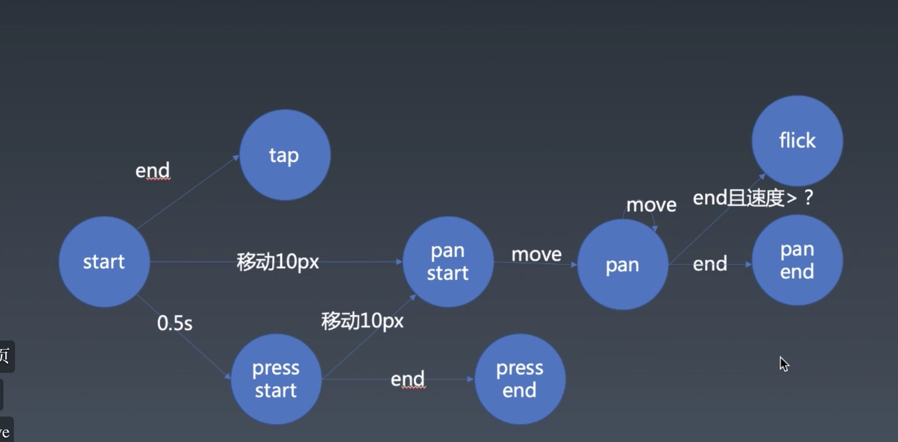

<body>
  <!--  -->
  <div id="my" style="transform: translate(0px, 0px) ;width: 100px; height: 100px;background-color: lightblue; "></div>
</body>
<script type="module">
  import { Gesture } from './module.gesture.js'
  const g = new Gesture({
    el: document.getElementById("my"),
    data: {
      x: 0,
      y: 0
    },
    events: {
      pan(e) {
        const { clientX, clientY, startX, startY } = e.detail
        const { x, y } = this.data
        this.el.style.transform = `translate(${x + clientX - startX}px, ${y + clientY - startY}px )`
      },
      panend(e) {
        const { clientX, clientY, startX, startY } = e.detail
        const { x, y } = this.data
        console.log(clientX, clientY, startX, startY, x, y )
        this.data.x = x + clientX - startX
        this.data.y = y + clientY - startY
        console.log(this.data.x, this.data.y)
      }
    }
  })

</script>
